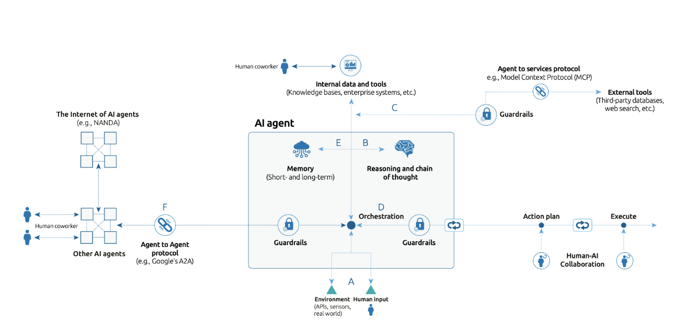

Units 1-3: Collaborative Discussion 1
Topic: Agent-Based Systems - What has led to the rise of agent-based systems and the benefits this approach can offer to organisations?
This discussion ran across Units 1-3 and required an initial post, at least two peer responses, and a summary post. A minimum of three academic references was required throughout.
Initial Post
Initial Post • Unit 1
The Next Paradigm for The AI Era
As artificial intelligence becomes increasingly ambiguous - re-directing the trajectory of technology away from centrally controlled architectures - greater emphasis has been placed on systems capable of autonomous decision-making. This re-direction has shone light on the limitations of traditional software systems when operating in complex and unpredictable environments. In response, agent-based systems have gained prominence as a computational approach that better reflects real-world organisational dynamics. Rather than relying on a single decision-making entity, these systems consist of multiple autonomous components capable of acting independently while interacting with one another (Krishnan, 2025).
Agent-based systems (ABS) are composed of autonomous agents that perceive their environment, make independent decisions, and perform actions aimed at achieving defined objectives (as shown in Figure 1). These agents are applicable in various fields, offering organisations the opportunity to enhance efficiency, streamline operations and increase revenue (Wooldridge, 2009).

Within the transportation domain, ABS such as individual traveller or vehicular agents are used to perceive and adapt to dynamic environments.
A notable example of agent-based systems in practice is the SimMobility platform, developed by the Singapore-MIT Alliance for Research and Technology (SMART) to support urban transport planning through multi-scale simulation. In parallel, government agencies such as the Land Transport Authority have established formal strategic roadmaps, including the Smart Mobility 2030 plan, which outline how computational and data-driven approaches will be applied to enhance Singapore's transportation systems. These approaches emphasise the use of predictive analytics and real-time systems to enable smarter junction management and improved integration between public transport and road operations. Collectively, such initiatives demonstrate how agent-based and intelligent modelling approaches can support organisational decision-making while contributing to wider societal benefits, including improved quality of life and enhanced traveller experience (Adnan, 2016; Land Transport Authority, 2025).
Although ABS presents many benefits for organisations, it is important to note the possible limitations of these systems, including cost of computation. Due to their reliance on large numbers of interacting agents and detailed environmental modelling, agent-based systems can be computationally expensive, particularly at scale. Organisations should therefore ensure they have plans in place to mitigate these limitations while enhancing their operations (Kagho et al., 2020).
Peer Responses
Unit 2 • My Peer Responses
Peer Response 1 - Response to Ross Balut
Thank you for your reply, Ross. Addressing the human intervention needed with ABS, in accordance with bodies such as the California DMV, is extremely insightful and something that companies should carefully consider, especially when looking to implement ABS into their systems.
In support of your post, although the main objective of automation is to maximise efficiency and safety and minimise human error, transport automation is still maturing. Humans must intervene when a system's automation capacity is reached, otherwise road accidents and other transport incidents can arise.
Therefore, it is essential for automated systems and humans to build a level of trust - one that balances complacency and productivity to ensure project outcomes are executed effectively (Papadimitriou et al., 2020).
References:
Papadimitriou et al. (2020) 'Transport safety and human factors in the era of automation: What can transport modes learn from each other?', Accident Analysis & Prevention, 114(105656), pp. 1-2. Available at: https://doi.org/10.1016/j.aap.2020.105656
Peer Response 2 - Response to Richard Szepi
Thank you, Richard, for your insightful response. I appreciate your expansion on the limitations of ABS - particularly computational costs - and the mitigation strategies you have introduced.
I was specifically interested in the strategy of adopting multi-scale modelling in traffic simulation. The appropriate scale of modelling will depend on the scale of the project and therefore have a significant impact on results. For example, microscopic modelling is extremely useful when taking a granular perspective, focusing on interactions such as vehicle accelerations and lane changes to generate a realistic representation of traffic flow. Macroscopic simulation, on the other hand, would be more suitable for cities and highways, focusing on overall road flow rather than individual vehicle movement - such as SimMobility (Jiang et al., 2024).
Adopting the most suitable modelling technique can have a significant impact on organisations in the traffic field. It is therefore imperative for organisations to incorporate these strategies with scale in mind, in order to better anticipate computational costs and mitigate excessive expenditure where possible.
References:
Jiang et al. (2024) 'Large scale multi-GPU based parallel traffic simulation for accelerated traffic assignment and propagation', Transportation Research Part C: Emerging Technologies, 169(104873), pp. 1-2. Available at: https://doi.org/10.1016/j.trc.2024.104873
Summary Post
Summary Post • Unit 3
Over the course of this discussion, the central question of what has driven the rise of agent-based systems and the value they offer to organisations has been examined from multiple perspectives.
My initial post argued that the limitations of traditional, centralised software architectures in complex and unpredictable environments have been a primary catalyst for the adoption of ABS. As Krishnan (2025) notes, ABS enable autonomous, distributed decision-making that better mirrors real-world organisational dynamics. The SimMobility platform and Singapore's Smart Mobility 2030 initiative were presented as evidence of how ABS can deliver tangible societal and organisational outcomes (Adnan, 2016; Land Transport Authority, 2025).
Peer contributions from Ross and Richard meaningfully extended this discussion. Ross highlighted that in safety-critical domains, human oversight remains essential - a point well illustrated by robo-taxi programmes operating under bodies such as the California DMV (California DMV, n.d.). This aligns with the view that trust between automated systems and human operators must be carefully cultivated, balancing complacency and productivity to ensure effective outcomes (Papadimitriou et al., 2020). Richard further expanded on the computational cost limitation I raised, introducing mitigation strategies including multi-scale modelling and parallel computing frameworks. His distinction between microscopic and macroscopic simulation approaches is particularly relevant for organisations determining the appropriate modelling scale for their operational context (Kagho et al., 2020; Jiang et al., 2024).
In conclusion, the rise of agent-based systems reflects a broader organisational shift from rigid, rule-based control towards adaptive, emergent behaviour. The evidence reviewed across Units 1-3 suggests this shift is both technically justified and practically valuable - provided that implementation challenges around oversight, validation and computational cost are carefully managed.
References
- Adnan, M., et al. (2016) 'SimMobility: A Multi-Scale Integrated Agent-based Simulation Platform', The 95th Annual Meeting of the Transportation Research Board (TRB), Walter E. Washington Convention Center, Washington, D.C., 10-14 January. Available at: https://www.researchgate.net/publication/296673237 (Accessed: 6 February 2026).
- Bastarianto, F.F., Hancock, T.O., Choudhury, C.F. and Manley, E. (2023) 'Agent-based models in urban transportation: review, challenges, and opportunities', European Transport Research Review, 15(19), pp. 1-3. Available at: https://doi.org/10.1186/s12544-023-00590-5
- California DMV (no date) Autonomous Vehicles Testing with a Driver. Available at: https://www.dmv.ca.gov/portal/vehicle-industry-services/autonomous-vehicles/testing-autonomous-vehicles-with-a-driver/ (Accessed: 11 February 2026).
- Capgemini (2025) Rise of Agentic AI. Available at: https://www.capgemini.com/wp-content/uploads/2025/07/AI-Agents_Final_290725.pdf (Accessed: 28 January 2026).
- Jiang et al. (2024) 'Large scale multi-GPU based parallel traffic simulation for accelerated traffic assignment and propagation', Transportation Research Part C: Emerging Technologies, 169(104873), pp. 1-2. Available at: https://doi.org/10.1016/j.trc.2024.104873
- Kagho, G.O., Balac, M. and Axhausen, K.W. (2020) 'Agent-Based Models in Transport Planning: Current State, Issues, and Expectations', Procedia Computer Science, 170, pp. 4-5. Available at: https://doi.org/10.1016/j.procs.2020.03.164
- Krishnan, N. (2025) 'AI Agents: Evolution, Architecture, and Real-World Applications', arXiv preprint arXiv:2503.12687v1. Available at: https://arxiv.org/html/2503.12687v1 (Accessed: 6 February 2026).
- Land Transport Authority (2025) Smart Mobility 2030. Available at: https://www.lta.gov.sg/content/dam/ltagov/getting_around/driving_in_singapore/intelligent_transport_systems/pdf/smartmobility2030.pdf (Accessed: 6 February 2026).
- Papadimitriou et al. (2020) 'Transport safety and human factors in the era of automation: What can transport modes learn from each other?', Accident Analysis & Prevention, 114(105656), pp. 1-2. Available at: https://doi.org/10.1016/j.aap.2020.105656
- Wooldridge, M. (2009) An Introduction to MultiAgent Systems. 2nd edn. Chichester, UK: John Wiley & Sons. Available via the VitalSource Bookshelf (Accessed: 27 January ２０２６).